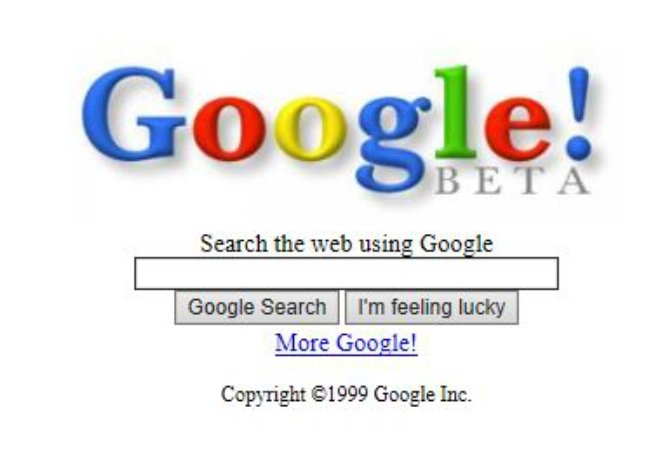
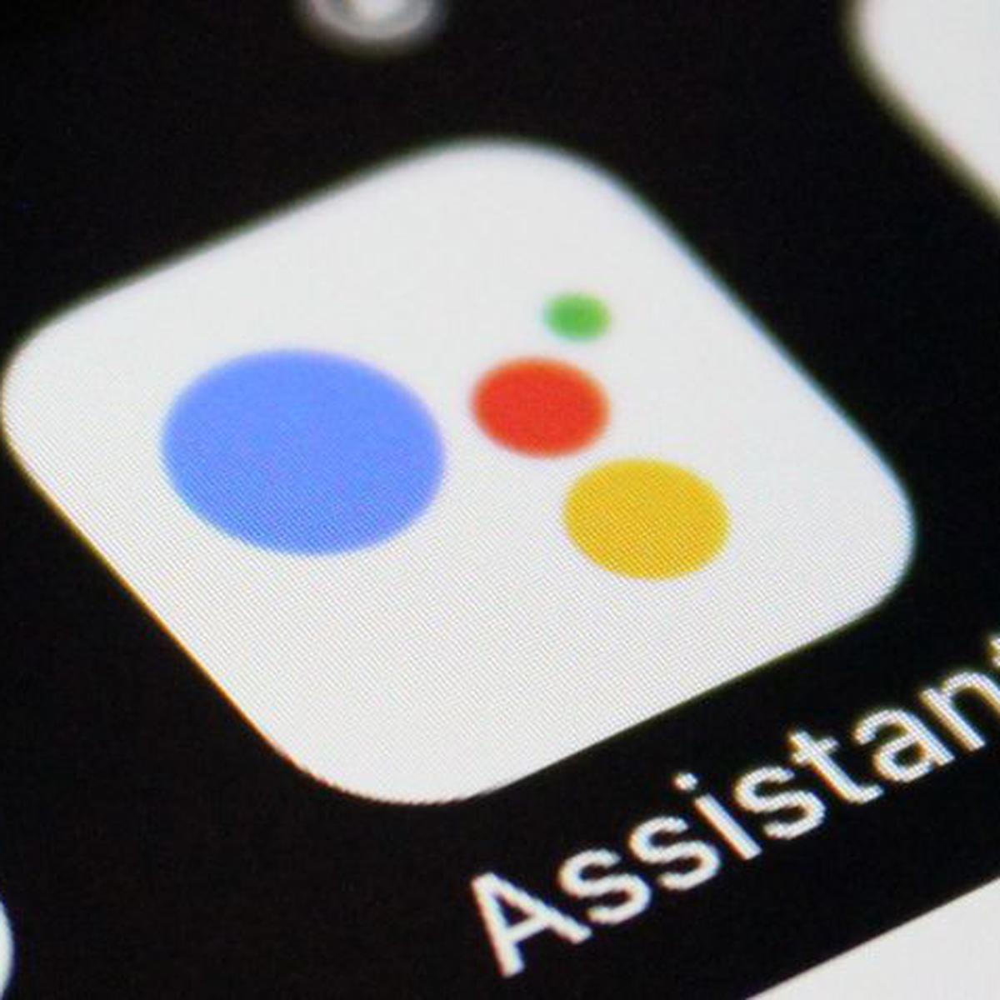

Línea del tiempo evolución de la Web |
| Año |
Suceso |
Representación |
| 1993 |
Mosaic, el primer navegador gráfico. |
|
| 1995 |
Amazon.com es fundada. |
|
| 1997 |
Google es fundado como un motor de búsqueda para la web. |
 |
| 1999 |
Salesforce.com es fundada. |
 |
| 2002 |
Flickr es fundada. |
|
| 2004 |
Facebook es fundado como una red social para universitarios. |
 |
| 2006 |
Internet alcanzó los mil cien millones de usuarios. |
|
| 2007 |
Apple lanza el primeriPhone |
|
| 2010 |
Instagram es fundado. |
|
| 2014 |
Slack es fundado |
|
| 2018 |
Google lanza la primera versión de su asistente virtual "Google Assistant" |
 |
| 2021 |
OpenAI lanza GPT-3, un modelo de lenguaje de inteligencia artificial |
|